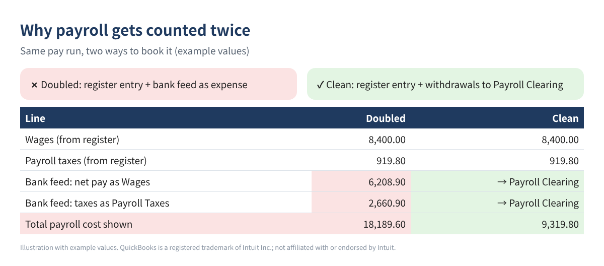
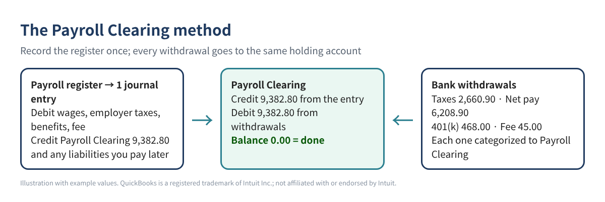
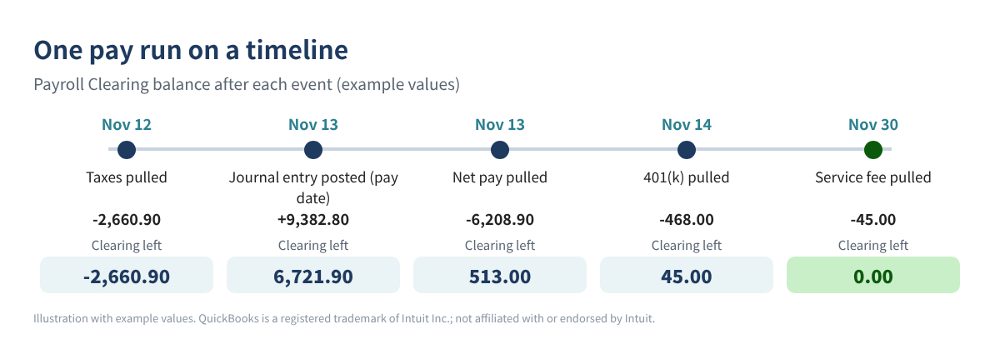
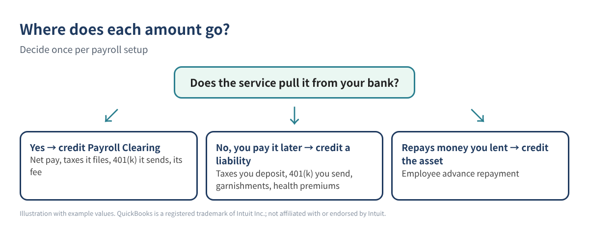

You use an outside payroll service, such as Gusto, ADP or Paychex, and your books are in QuickBooks. Every payday your bank shows three or four withdrawals: net pay, a tax impound, maybe a 401(k) transfer and a service fee. Your payroll register shows something else entirely: gross wages, taxes withheld, employer taxes and deductions. Somewhere between the two, payroll gets counted twice, or your wages never match what you report.
This is one of the most repeated payroll questions in the QuickBooks Community, and the usual replies are partial: exclude the bank lines, or ask your accountant. Below is a complete method you can follow yourself in QuickBooks Desktop or QuickBooks Online. It needs one extra account and one journal entry per pay run.
Who this is for: owners and bookkeepers whose payroll is run outside QuickBooks (by a payroll service or a PEO) and who record payroll in QuickBooks Desktop or Online themselves.
Two things try to record the same payroll. The payroll register (or the journal report your provider gives you) is the full picture: gross wages are an expense, employer taxes are an expense, and the withholdings are money held for someone else. The bank feed only sees cash leaving: the net pay batch, the tax impound and so on.
If you enter the register as a journal entry and let the bank feed add each withdrawal as Wages or Payroll Taxes, the expense is booked twice. If you only add the bank lines, your wages show net pay instead of gross pay, and your taxes are lumped together. Neither matches the payroll tax returns your provider files.

Create an account called Payroll Clearing (type: Other Current Liability). Then follow one rule: the journal entry from the payroll register credits Payroll Clearing for everything the service pulls from your bank, and every payroll withdrawal in the bank feed is categorized to Payroll Clearing. When all the withdrawals for a pay run have arrived, the account is back to zero.

| Account | Type | Used for |
|---|---|---|
| Payroll Expenses:Wages | Expense | Gross wages |
| Payroll Expenses:Payroll Taxes | Expense | Employer Social Security, Medicare, FUTA, SUTA |
| Payroll Expenses:Benefits | Expense | Employer 401(k) match, employer health share |
| Payroll Service Fees | Expense | Provider fee |
| Payroll Clearing | Other Current Liability | Everything the provider pulls from your bank |
| Payroll Liabilities (sub-accounts) | Other Current Liability | Amounts you pay later yourself: taxes, 401(k), garnishments |
Table 1. Suggested accounts. Use your existing names if you have them.
Desktop: Lists > Chart of Accounts, then Account > New. Online: open your chart of accounts (in newer layouts it is under Accounting) and select New; pick the account type, then the closest detail type.
Open the payroll register for the check date and find the totals line. You need gross wages, employee taxes withheld, employee deductions, employer taxes and the fee (if it is pulled with the pay run). Here is an example pay run we will use for the rest of the post.
| Item (example values) | Amount |
|---|---|
| Gross wages | 8,400.00 |
| Employee taxes withheld (federal 812.00, Social Security 520.80, Medicare 121.80, state 286.50) | 1,741.10 |
| Employee deductions (401(k) 300.00, health 150.00) | 450.00 |
| Employer taxes (Social Security 520.80, Medicare 121.80, FUTA 50.40, SUTA 226.80) | 919.80 |
| Employer 401(k) match | 168.00 |
| Provider fee | 45.00 |
Table 2. Example payroll register totals. All values are invented.
Type the totals into a sheet (Excel or Google Sheets) and let three formulas do the work. If gross wages are in B2, employee taxes in B3, deductions in B4, reimbursements in B5, employer taxes in B6, employer contributions in B7, the fee in B8, and the amount of 401(k) the provider sends in B9:
=B2-B3-B4+B5 → 6,208.90=(B2-B3-B4+B5)+B8+B3+B6+B9 → 9,382.80=B2+B6+B7+B5+B8 must equal total credits (clearing plus anything left as a liability, here the 150.00 health deduction).| Account | Debit | Credit |
|---|---|---|
| Payroll Expenses:Wages | 8,400.00 | |
| Payroll Expenses:Payroll Taxes | 919.80 | |
| Payroll Expenses:Benefits | 168.00 | |
| Payroll Service Fees | 45.00 | |
| Payroll Clearing | 9,382.80 | |
| Payroll Liabilities:Health | 150.00 | |
| Total | 9,532.80 | 9,532.80 |
Table 3. The journal entry for the example pay run. Example values.
Notice that the 401(k) money the employee and employer put in (300.00 + 168.00) sits inside the clearing credit, because in this example the provider pulls it from the bank. The health deduction is credited to a liability because you pay the insurer yourself.
Select + New > Journal entry, set the date to the pay date and type the lines. To skip typing, Intuit's help article describes a CSV import at Settings (gear) > Import data > Journal entries, with columns for Journal No., Journal Date, Account Name, Debits, Credits and Description. Accounts must already exist, and if you use account numbers, turn them off before importing.
Use Company > Make General Journal Entries. For an import, Desktop accepts IIF files at File > Utilities > Import > IIF Files (back up first, and switch to single-user mode). IIF does not warn you about duplicates, so import each pay run only once.
Now the bank side. In QuickBooks Online, open your bank transactions, find each payroll withdrawal in the For review list (some newer layouts call it Pending) and categorize it to Payroll Clearing. In Desktop, add each withdrawal from the Bank Feeds Center, or enter it in the checking register, with the account Payroll Clearing.

After the last withdrawal, run a QuickBooks report on Payroll Clearing. A zero balance means nothing is missing and nothing is doubled. If you already let the bank feed add payroll as Wages, open the Categorized (or Posted) list, undo those lines and recategorize them to Payroll Clearing.
Some services only handle net pay, and you deposit the taxes yourself. Then the taxes are not part of the clearing credit. Credit them to Payroll Liabilities instead, and categorize your later tax payments to the same liability accounts. The same goes for a 401(k) you send yourself, garnishments and health premiums.

Keep one row per pay run with gross wages, federal income tax, Social Security and Medicare (both shares). At quarter end, compare the totals with your provider's quarterly reports, such as the Form 941 it filed. A difference almost always means a pay run is missing, entered twice or was corrected after you booked it.
You can, but then nothing proves the cash really left your bank, and your reconciliation gets harder. Categorizing them to Payroll Clearing records the cash and tells you when something is missing.
If a sync posts the payroll for you, check what it posts and how it treats the bank withdrawals before adding anything by hand. The clearing method is for payroll you record yourself, and it is also a good way to check a sync.
Additional Medicare Tax is withheld from employees with higher wages, and employers do not match it. Social Security is usually equal on both sides.
No. It is a temporary holding account, so Other Current Liability (or a bank-type clearing account) keeps it off the Profit and Loss.
If you would rather not build the sheet yourself, a ready-made workbook with these formulas, CSV and IIF import rows, a bank match tab and a pay run log is available as the Outside Payroll Journal Entry & Bank Match Builder on our Etsy and Gumroad shops.
Disclaimer: This article is for education only and is not tax, legal or payroll advice. Payroll rules depend on your facts and your state; ask a qualified tax professional about your situation. Menu names change between QuickBooks versions. QuickBooks is a registered trademark of Intuit Inc.; not affiliated with or endorsed by Intuit.